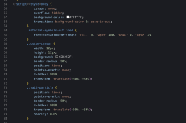
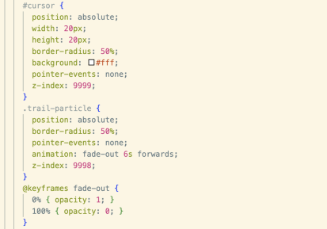
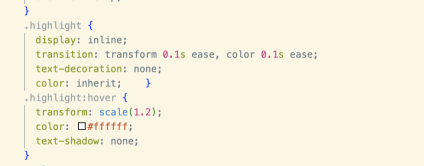
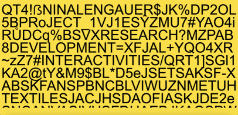
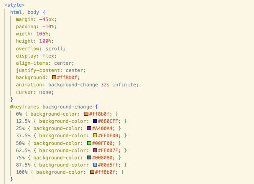
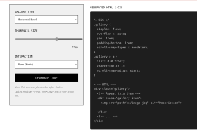
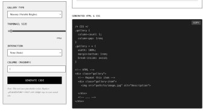
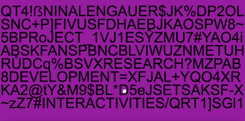

I knew I wanted to make the landing page different to the one in Workbook A, to try and display my more intricate knowledge of VSCode.
I wanted to make it more minimal and maybe less playful, not quite serious but a step away from the colourful, fun vibe in the original.
So I tried just making the background white, or one solid colour. (forgot to take screenshot before moving on hence why background GIF included here).

Then I tried playing with text colour, and for whatever reason I chose some of the most illegible colours so that obviously didn't stick.

Then I tried playing with text on websites such as type.constraint.systems to see if I could use something like this for the homepage options.

Here is another version of this (again with the very illegible colour) and I liked the approach, but I thought it didn't quite suit the context of the home page. So I abandoned this idea.
The next step then became to explore ideas of movement and background animations and move away from the text, to see if I could come up with something new through this different route.
In my spare time I started exploring ASCII animation through websites that make it for myself such as grainrad.com which had the webcam attached so I could make videos of myself in the ASCII format.
I thought this video of me waving could be a fun addition to the homepage, however decided against it as it was not really my work, and I did not want my face anywhere - even if in glyphs and digits.
I then attempted my own take on ASCII animation in Adobe After Effects, which for whatever reason was quite complicated. Thus when I developed this one GIF, I thought I should use it for something after spending two hours on it.
This gif is a simple rotating star which uses numbers to determine shadows and light, and I really enjoyed the digital and analogue vibe it gives off on the landing page behing my text.

I then removed the black background and turned it into a GIF. I put it on the landing page and I enjoy that the animation used was created by me too.
A good way to use my random side projects for uni assignments.

My next step was to find the right font and styling for my landing page. So I just went onto Google Fonts to find one I liked and landed on 'Press Start 2P' which I thought suited the pixelated, explicit digital vibe of this assignment.

I wanted to keep the cursor in the same vein as the original landing page, however making the glyphs all shades of red made it seem more focused and less totally playful.

Rather than solid colour, I wanted to create my own backgrounds to each of the pages, so I created simple Photoshop images with different colours so create a continuous backgrounds throughout and made entirely by me.
★ The Code ★

Moving through my development of code, I copied most of the basics from the original workbook pages therefore a lot of the document is developed the same way.
Developments for me were focused on having more user interactions, clicks, hovers, lightboxes, videos et al were key for me to develop.
This was my code for the cursor I had wanted when I asked Stitch to make it for me in class.
I copied that code into VSCode and edited the colours, size, opacity within VSCode to suit the exact idea I had envisioned.
This was one of the first things I had done for this project. The reason why I decided to keep the stitch code mostly as it was,
was due to the fact that when I searched for the same help on W3 Schools, or with a Google search, the same code elements came up: which I took to suggest
that while Stitch made it too easy and accessible for me, it would have been possible for me to create a replica of the final design.

This is the final code for the cursor. When I tried to replicate it on my other pages,
such as this one, it didn't transfer as expected. I suspect it is to do with some typos and style issues in the bottom section, which I didn't have enough time to adjust.

My hover design was concieved from simple google searches. A mostly easy process, I was happy to see that it worked in the way I imagined.
I had originally wanted the text to be in different fonts, yet didn't have enough time, however I think the hover is still effective.

This was the first iteration of the landing page, before I knew how to clip it to the screen.
I hated the way in which the bottom line of text appeared.

For the changing colours, I had asked the co-pilot to make it change the background from white to black.
Once I had seen the original block of code, I continued to add and change the colours until I landed on what it is now.

I had always known I wanted a horizontal scroll, again so that there was something slightly more interactive that a regular gallery (like this page, ew!).
So for this I used the GitHub cheat sheet CSS code, which was actually quite hard for me to wrap my head around.
All the images I uploaded were too big and if they were well sized, there was a large gap in the scroll box.
However, once I realised you can just change whatever - you just need to know the right words - I was able to adjust image height and width, remove the scroll bar, and set aspect ration to auto.

I did the exact same with this page. Just with the 1 colomn Masonry Gallery option.

There are still some things I would change and bugs (such as when clicking to go back to the landing page,
for whatever reason the page doesn't snap to the left like it is meant to). And I would love to keep adding changes in cursors and moving objects to the pages.